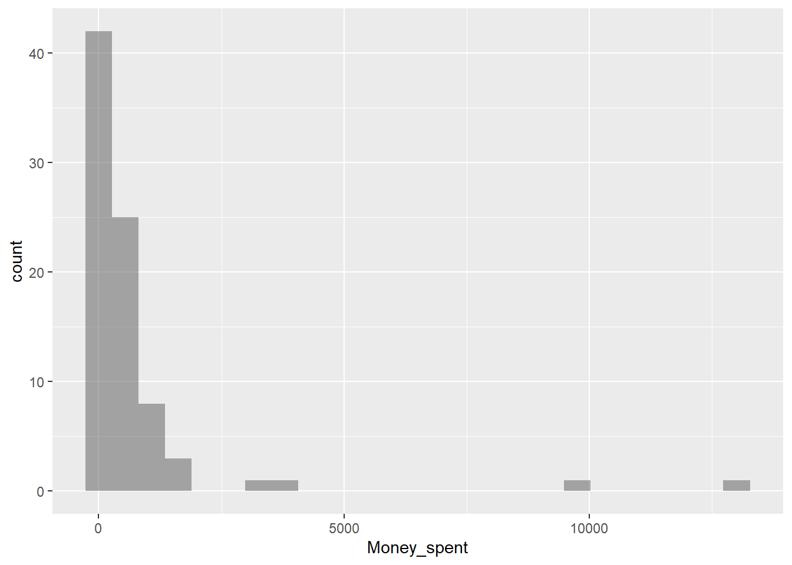
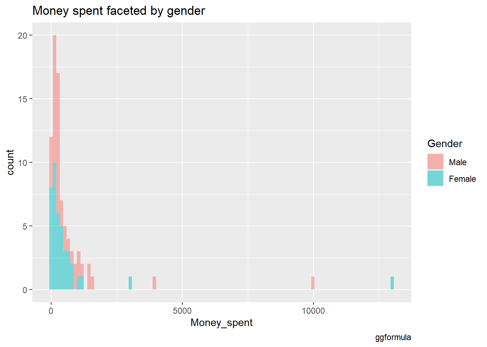
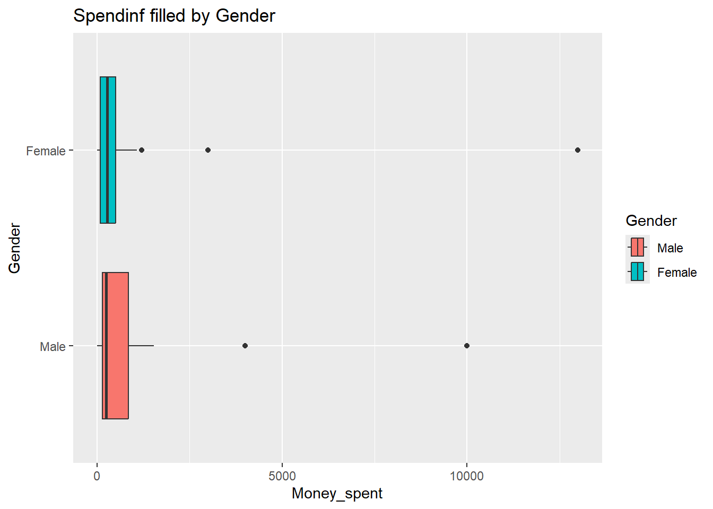
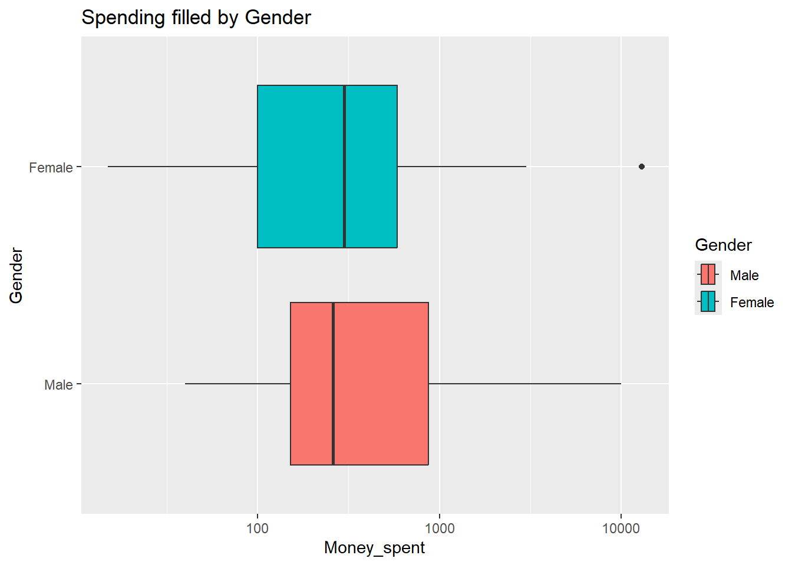
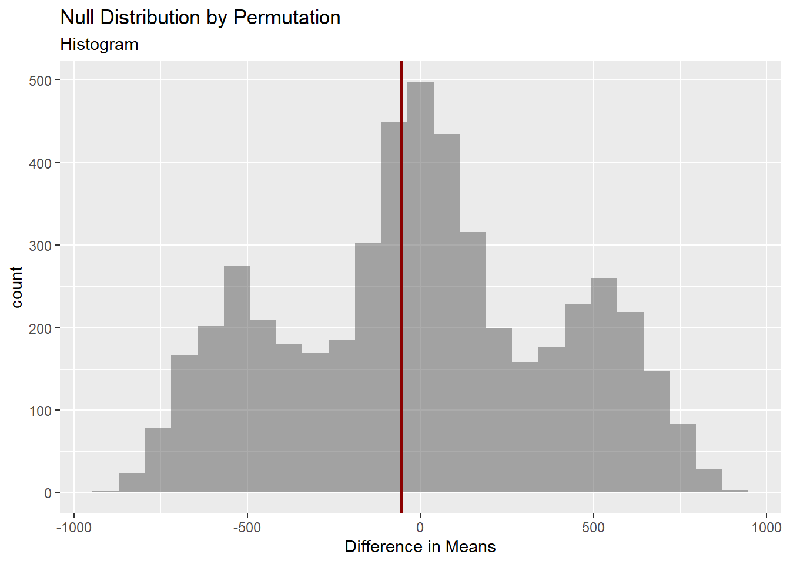

── Attaching core tidyverse packages ──────────────────────── tidyverse 2.0.0 ──
✔ dplyr 1.1.4 ✔ readr 2.1.5
✔ forcats 1.0.0 ✔ stringr 1.5.1
✔ ggplot2 3.5.1 ✔ tibble 3.2.1
✔ lubridate 1.9.3 ✔ tidyr 1.3.1
✔ purrr 1.0.2
── Conflicts ────────────────────────────────────────── tidyverse_conflicts() ──
✖ dplyr::filter() masks stats::filter()
✖ dplyr::lag() masks stats::lag()
ℹ Use the conflicted package (<http://conflicted.r-lib.org/>) to force all conflicts to become errors
library(mosaic)
Registered S3 method overwritten by 'mosaic':
method from
fortify.SpatialPolygonsDataFrame ggplot2
The 'mosaic' package masks several functions from core packages in order to add
additional features. The original behavior of these functions should not be affected by this.
Attaching package: 'mosaic'
The following object is masked from 'package:Matrix':
mean
The following objects are masked from 'package:dplyr':
count, do, tally
The following object is masked from 'package:purrr':
cross
The following object is masked from 'package:ggplot2':
stat
The following objects are masked from 'package:stats':
binom.test, cor, cor.test, cov, fivenum, IQR, median, prop.test,
quantile, sd, t.test, var
The following objects are masked from 'package:base':
max, mean, min, prod, range, sample, sum
library(skimr)
Attaching package: 'skimr'
The following object is masked from 'package:mosaic':
n_missing
library(ggformula)library(crosstable)
Attaching package: 'crosstable'
The following object is masked from 'package:purrr':
compact
Defining the Research Experiment:
Goal of the Experiment: To determine if there is a significant difference in the amount of money spent by male and female students on a college campus on a random day of the month, in this case, 23rd October- 2024. This could speak for the amount of money each group receives to spend i.e. the pocket money they receive.
Methodology
Sampling: A representative sample of students from Manipal Academy of Higher Education, ensuring a hopefully balanced number of male and female participants to avoid bias.
Method Followed- To ensure a lack of bias, a coin was tossed to determine if data would be collected from a person or not. This lead to random sampling ensuring diversity in age, year of study, and socioeconomic background.
Sample Size: We had a total of 82 participants 41 males and 41 females.
Why could knowing this be useful?
It can reflect how parents or guardians may perceive the financial needs of each gender, potentially revealing implicit biases or expectations.
If data shows a discrepancy in pocket money that isn’t based on actual need, it could encourage families to reconsider their allocation practices.
For institutions, knowing whether one group typically receives less financial support could inform the design of need-based programs, financial aid, or scholarships.
Name Gender Money_spent
1 Aagam Male 150
2 Aakash Male 240
3 Aarushi Female 382
4 Abheeta Female 60
5 Adithya Male 68
6 Aditya Male 300
7 Akanksha Female 270
8 Amruta Female 190
9 Anaaya Female 300
10 Anish Male 0
11 Ankush Male 250
12 Anousha Female 85
13 Anoushka Female 700
14 Anushka Female 140
15 Arjun Male 1143
16 Arya Male 100
17 Aryan Male 10000
18 Asra Female 1070
19 Aziz Male 1433
20 Bhumika Female 1200
21 Daana Female 66
22 Dan Male 600
23 Deborishi Male 205
24 Devanshi Female 700
25 Dhiman Male 910
26 Dhruv Male 900
27 Dhurv Male 185
28 Eisha Female 300
29 Ezhilan Male 842
30 Geet Male 50
31 Harjot Female 3000
32 Janhavi Female 150
33 Jeff Male 200
34 Jeffrey Male 150
35 Kalyani Female 0
36 Kartik Male 145
37 Kashvi Female 430
38 Kavana Female 500
39 Khushi Female 785
40 Koustav Male 250
41 Krish Male 70
42 Kshirija Female 100
43 Lekith Male 100
44 Maahin Male 310
45 Maanya Female 15
46 Madhav Male 4000
47 Manav Male 40
48 Nandana Female 0
49 Navya Female 55
50 Nayantara Female 192
51 Neeti Female 280
52 Nithya Female 85
53 Nivaan Male 220
54 Parisa Female 80
55 Rikit Male 259
56 Risha Female 0
57 Ritik Male 1000
58 Rudraj Male 478
59 Rukaiya Female 20
60 Ryan Male 330
61 Shaivi Female 318
62 Shashank Male 400
63 Shashwat Male 149
64 Shiva Male 250
65 Shreya Female 585
66 Simran Female 340
67 Simran Anand Female 660
68 Snigdha Female 100
69 Suhaas Male 997
70 Suprita Female 500
71 Sutej Male 0
72 Tanmay Female 800
73 Tanya Female 0
74 Taran Male 1399
75 Tarini Female 200
76 Tathastu Male 1535
77 Vanya Female 350
78 Varad Male 154
79 Vasantha Female 418
80 Vasundhara Female 13000
81 Veer Male 566
82 Viraj Male 315
Descriptive Analysis:
skim(pockets_modified)
Data summary
Name
pockets_modified
Number of rows
82
Number of columns
3
_______________________
Column type frequency:
character
1
factor
1
numeric
1
________________________
Group variables
None
Variable type: character
skim_variable
n_missing
complete_rate
min
max
empty
n_unique
whitespace
Name
0
1
3
12
0
82
0
Variable type: factor
skim_variable
n_missing
complete_rate
ordered
n_unique
top_counts
Gender
0
1
FALSE
2
Mal: 41, Fem: 41
Variable type: numeric
skim_variable
n_missing
complete_rate
mean
sd
p0
p25
p50
p75
p100
hist
Money_spent
0
1
720.96
1835.72
0
100
264.5
596.25
13000
▇▁▁▁▁
Observations:
There are 41 data entries each for males and females.
The lowest money spent on 23rd October is 0 while the highest is 13,000.
The mean amount spent is 720.96
Visualising Money Spent:
Plotting a histogram to see a distribution of the money spent:
pockets_modified %>%gf_histogram(~Money_spent)

Plotting a histogram to see a distribution of the money spent faceted by gender:
gf_histogram(~Money_spent, fill =~Gender, data = pockets_modified, bins=100) %>%gf_labs(title ="Money spent faceted by gender", caption ="ggformula")

pockets_modified %>%gf_histogram(~Money_spent|Gender, fill =~Gender, color ="black", alpha =0.3) %>%gf_labs(title ="Money spent faceted by gender",caption ="ggformula" ) %>%gf_theme(theme(axis.text.x =element_text(angle =45, ## the angle at which the word should be placed.hjust =1## the incremanting space from the x axis ) ))
Observations: It seems like the distribution of money spent are similar for boys and girls. Both distributions show a heavy concentration toward the lower end, suggesting that most students spent small amounts of money, regardless of gender. However, there are some cases with much higher expenditures on both sides.
Summerising the data:
Trying to find the difference in means and medians of money spent based on the difference in gender within the sample population:
crosstable(Money_spent ~ Gender, data = pockets_modified) %>% crosstable::as_flextable()
label
variable
Gender
Male
Female
Money_spent
Min / Max
0 / 1.0e+04
0 / 1.3e+04
Med [IQR]
250.0 [150.0;842.0]
280.0 [85.0;500.0]
Mean (std)
748.6 (1636.5)
693.3 (2035.8)
N (NA)
41 (0)
41 (0)
I can visualize the difference in medians and IQRs with a box plot:
pockets_modified %>%gf_boxplot(Gender ~ Money_spent, fill =~Gender) %>%gf_labs(title ="Spendinf filled by Gender")

To understand it better, i take scale the x-axis to log(10):
pockets_modified %>%gf_boxplot(Gender ~ Money_spent, fill =~Gender) %>%gf_refine(scale_x_log10()) %>%gf_labs(title ="Spending filled by Gender")
Warning in scale_x_log10(): log-10 transformation introduced infinite values.
Warning: Removed 6 rows containing non-finite outside the scale range
(`stat_boxplot()`).

I will consider the box-plot without the values scaled to log(10) since it seems like some values are going out of bounts/ are nit being able to be represented.
Observations (regarding mean and sd):
1. The mean amount spent by males- 748.6 , is slightly higher than that of females- 693.3.
2. The standard deviation is much larger for females- 2035.8, than for males- 1636.5, indicating more variability in spending among females (or there may be more extreme spending outliers in the female group?).
3. The median spending is slightly higher for females at 280 compared to that of males which is 250.
4. The interquartile range (IQR) for males is broader- 150.0 to 842.0 compared to that for females- 85.0 to 500.0, suggesting a wider spread in spending behavior for males.
5. On descriptive analysis of the data, it appears so that there is no difference in the money spent by both groups- Both show very similar patterns in spending behavior, but if there in fact is a difference, the whiskers in the box plot being longer of males gives me a hunch that males spent more money than females.
Defining my Hypothesis:
Null Hypothesis: There is no difference in the money spent by males and females which indicates that they receive more pocket money
Alternative Hypothesis: Males tend to spend more money than women which indicates that they receive more pocket money compared to women.
Since the IQR ranges of both males and females overlap so much, we can only come to a conclusion of our hypothesis with statistical analysis. The first step of it being a t-test.
Statistical Analysis: Hypothesis testing
A t-test:
Assumptions:
1. The distribution for each group - male and female is normal.
mosaic::t_test(Money_spent ~ Gender, data = pockets_modified)%>% broom::tidy()
The estimate suggests that male students, on average, spent 55.29 more than female students.89
Since the p-value value is as high as 0.8, we fail to reject the null hypothesis. This suggests that there is no statistically significant difference between the spending of male and female students.The confidence interval of -757.07 and 867.66 suggest the same since it straddles 0. Therefore, our null hypothesis that gender does not play a role in the amount of money spent on a random day by a college student is true.
But is this t-test reliable?.. only if the the money spent by the sample is normally distributed. We test that using a Shapiro test.
# A tibble: 1 × 3
statistic p.value method
<dbl> <dbl> <chr>
1 0.345 2.34e-17 Shapiro-Wilk normality test
We need to know if the individual distribution of both genders are normally distributed. And so we transform our data set to into 2- one with all the male values and one with all the female values.
Name Gender Money_spent
1 Aagam Male 150
2 Aakash Male 240
3 Adithya Male 68
4 Aditya Male 300
5 Anish Male 0
6 Ankush Male 250
7 Arjun Male 1143
8 Arya Male 100
9 Aryan Male 10000
10 Aziz Male 1433
11 Dan Male 600
12 Deborishi Male 205
13 Dhiman Male 910
14 Dhruv Male 900
15 Dhurv Male 185
16 Ezhilan Male 842
17 Geet Male 50
18 Jeff Male 200
19 Jeffrey Male 150
20 Kartik Male 145
21 Koustav Male 250
22 Krish Male 70
23 Lekith Male 100
24 Maahin Male 310
25 Madhav Male 4000
26 Manav Male 40
27 Nivaan Male 220
28 Rikit Male 259
29 Ritik Male 1000
30 Rudraj Male 478
31 Ryan Male 330
32 Shashank Male 400
33 Shashwat Male 149
34 Shiva Male 250
35 Suhaas Male 997
36 Sutej Male 0
37 Taran Male 1399
38 Tathastu Male 1535
39 Varad Male 154
40 Veer Male 566
41 Viraj Male 315
# A tibble: 1 × 3
statistic p.value method
<dbl> <dbl> <chr>
1 0.407 1.14e-11 Shapiro-Wilk normality test
The statistic indicates how closely the sample data follows a normal distribution (the closer the value is the 1, the more normal the distribution is) and so the computed value of 0.40 says that the distribution is not normal.
A p value so low- 1.135947e-11 indicates that we must reject the null hypothesis.Therefore, the data is not normally distributed.
For females:
Null hypothesis: The money spent by females is normally distributed.
The estimate of the difference between both groups is 55.00 a high p-value (>0.05) of 0.38 suggests that we cannot reject the null hypothesis. There is statistically no significant difference between the two groups’ median values. 0 falls within the confidence interval which further suggest the same.
I received an error saying “Warning: cannot compute exact p-value with ties”. This means that because i have so may repeating values (I’m guessing mainly 0)- there are many values with the same rank and polarity. This could lead to not having precise p-values.
Therefore, i cannot reject the null hypothesis right away. To make sure, i will go ahead and perform a permutation test to come to a solid inference, one that i cannot question.
Permutation Test
obs_diff_gender <-diffmean(Money_spent ~ Gender, data = pockets_modified) obs_diff_gender
diffmean
-55.29268
Here we create a null distribution for the difference in means by performing 4,999 permutations- each engraving and different values among the 2 gender groups. We do this by randomly reassigning the ‘Gender’ variable across all observations
null_dist_money <-do(4999) *diffmean(data = pockets_modified, Money_spent ~shuffle(Gender))##null_dist_money , it appears too long when i render it!
Visualization of the observed mean relative to the null distribution:
gf_histogram(data = null_dist_money, ~ diffmean, bins =25) %>%gf_vline(xintercept = obs_diff_gender, colour ="darkred", linewidth =1,title ="Null Distribution by Permutation", subtitle ="Histogram") %>%gf_labs(x ="Difference in Means")

The p-value obtained through the permutation test:
prop1 calculates the p-value by comparing the observed difference in means (obs_diff_gender) with the null distribution.
prop1(~ diffmean <= obs_diff_gender, data = null_dist_money)
prop_TRUE
0.4244
Observations:
The p-value observed through the permutation test is 0.41. If it would have been a value less than 0.05, it would indicate that that the observed difference is unlikely to have occurred by chance, leading to a rejection of the null hypothesis. But in this case the higher value i.e. 0.41, we cannot reject the null hypothesis: There is no difference in the amount of pocket money received by male and female students .
The visualization of the histogram of mean differences- null distribution along with the observed mean different suggests the same - I cannot reject the null hypothesis.
Conclusion:
In the assumption that my sample population is a true representation of my population- There is no difference in the amount spent by male and female students on a random day- and so there must be no difference in the pocket money received by both genders.